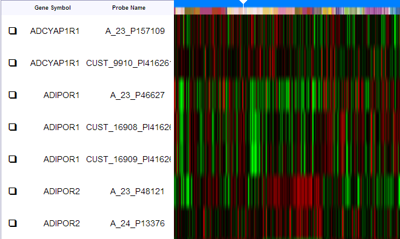
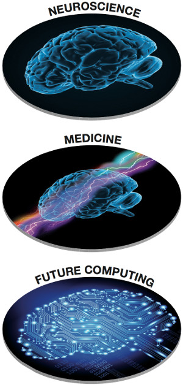
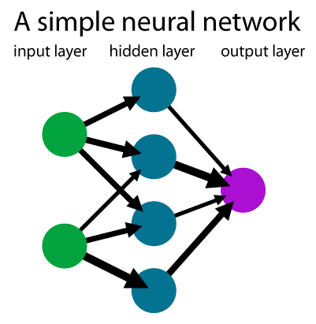
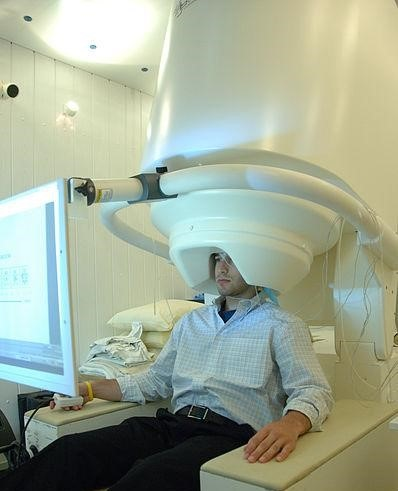

"I am a brain, Watson. The rest of me is a mere appendix." - Arthur Conan Doyle
Understanding the brain or the mind has always been the holy grail of our search for knowledge. Philosophers and scientists alike have sought for centuries to try to understand how and why we think. So far, we have but a vague understanding of this most essential part of our biology. However, recent efforts in unraveling the mind may soon bear fruit. Reverse engineering the brain may soon not only teach us about how the mind works and allow us to understand and cure many diseases that plague us, like Alzheimer's, Schizophrenia, or Autism, but also allow us to create an AI based on our own brain's design. We may even eventually cure paralysis or connect prosthetic limbs to actual nerves. [13]
Below are some of the directions of research scientists are currently looking into.
Understanding the Genetic Basis of the Brain
One particularly interesting approach to the problem of understanding the brain is to tackle the problem from the ground up, or looking at how our human genetics are responsible for the development of the brain. We share over 98.8% ("DNA: Comparing Humans and Chimps." ) of the same genome with our closest relatives, the Bonobo chimps. Obviously, we are incredibly different from other primates, most notably in our intelligence. What part of the comparatively miniscule 1.2% of our DNA that makes us human is responsible for our minds?[5]
Chimp vs Human vs Mouse Banding Patterns[5]
A research group at the Allen Institute for Brain Science in
Seattle has been working in this direction and has just
recently analyzed the brains of four fetuses between 15
and 21 weeks old - around the time when their brains begin
to develop in the womb. The group tried to correlate the
brain development with the expression of certain genes in
the fetuses, creating a sort of map for fetal brain
development. In doing so, they hope to learn more about
how the brain is formed as well the genetics that affect
it. This research is already yielding great results in the
study of autism. They have already determined that a gene
linked with autism might be responsible for unusually
excited neurons in the area of the brain linked with social
behavior. By analyzing the genes responsible for brain
development, we will not only begin to understand the
mechanics of brain formation and the source of our intelligence,
but also gain great insight into many mental diseases, maybe
even one day being able to cure them.[4]

Sample data from the BrainSpan site[1]
This research group woks as part of a consortium consisting of the Yale University, the University of California, the Allen Institute for Brain Science, and many other research groups. Partly, this consortium is working on a foundational resource for studying the genetic basis of brain development called BrainSpan. Collectively, they are attempting to build a sort of "Atlas" to the developing human brain. All their data and analysis is published free on the web at brainspan.org for anyone else to use. By creating this foundational resource, they prevent other groups looking into the brain from having to duplicate their work. They hope that this will kick-start further research into the genetics of the brain. The project is supported by grants from the National Institute of Mental Health as well as awards from the American Recovery and Reinvestment Act (aka the stimulus package Obama signed in 2009).[1]
[6]
Simulating with the Brain
Simulating the brain is just one of the goals of the Human Brain Project, but is arguably the main one. It is the focus of the Blue Brain Project, one of the subprojects of the HBP. Both projects are were started by Henry Markram, a neuroscientist and professor of neurology at École Polytechnique Fédérale de Lausanne in Switzerland.
The Human Brain Project[8]
[15]
The Human Brain Project is a large-scale, ten year project that coordinates the work of many international scientific groups, of which the Blue Brain Project is one, towards a unifying goal.
The Human Brain Project aims to develop information and communications technology in six key research areas: neuroinformatics, brain simulation, high-performance computing, medical informatics, neuromorphic computing, and neurorobotics.
Neuroinformatics Platform: will use state-of-the-art ICT to give neuroscientists the ability to organize and search massive volumes of heterogeneous data, knowledge and tools produced by the international neuroscience community. New tools incorporated in the platform will allow researchers to analyze and interpret large volumes of structural and functional data and to construct brain atlases. The HBP will use these tools to develop detailed 3D multi-level atlases of the mouse and human brains. The atlases, accessible to the community through the HBP web portal, will be the main source of high-quality annotated data for brain modelling.
Brain Simulation Platform: will provide a suite of software tools and workflows that allow researchers to build and simulate models of the brain at different levels of description, and to perform computer experiments that are difficult or impossible in the lab. The project will use the platform to develop and validate first draft models of different levels of brain organization, in mice and in humans. The ultimate goal will be to build and simulate multi-scale, multi-level models of the whole mouse brain and the whole human brain. The capabilities made available by the platform will contribute to identifying the neuronal architectures underlying specific brain functions, to studies of the mechanisms underlying neurological and psychiatric disease, and to new simulation-based techniques of drug discovery. Simplified versions of brain models will form the basis for novel neuromorphic computing systems.
High Performance Computing Platform: will provide the advanced supercomputing capabilities required for brain modelling and simulation and for the design of novel neuromorphic computing systems. The first element in the platform will be the HBP Supercomputer, a machine that will gradually evolve toward the exascale over the duration of the project. This will be complemented by satellite facilities dedicated to software development, molecular dynamics simulations, and massive data analytics. A key goal will be to develop a capability for in situ analysis and visualization of exascale data sets and for interactive visual "steering" of simulations. These features will be invaluable not just for brain simulation but also for many other applications, in the life sciences and elsewhere.
Medical Informatics Platform: will federate genetics, imaging, and other clinical data currently locked in hospital and research archives and make the data available to relevant research communities. An important goal will be to use the platform to identify biological signatures of disease. Success would accelerate the development of a new category of biologically based diagnostics, supported by strong, mechanistic hypotheses of disease causation. Hypotheses developed in this way could then be tested through computer experiments on the Brain Simulation Platform. The results will help researchers to identify new drug targets and new strategies for treatment, providing valuable input for industry decision-makers before they invest in expensive programs of animal experimentation or human trials.
Neuromorphic Computing Platform: will allow non-expert neuroscientists and engineers to perform experiments with Neuromorphic Computing Systems (NCS): hardware devices incorporating simplified versions of the brain models developed by the Brain Simulation Platform, state-of-the-art electronic component and circuit technologies as well as new knowledge arising from other areas of HBP research (experimental neuroscience, theory). The platform will provide access to three classes of NCS: systems based on physical (analogue or mixed-signal) emulations of brain models, running much faster than real time; numerical models running in real time on digital manycore architectures, and hybrid systems. The platform will be tightly integrated with the High Performance Computing Platform, which will provide essential services for mapping and routing circuits to neuromorphic substrates, benchmarking and simulation-based verification of hardware specifications.
Neurorobotics Platform: will offer scientists and technology developers a software and hardware infrastructure allowing them to connect brain models, implemented through the Brain Simulation Platform or on neuromorphic computing systems to detailed simulations of robot bodies and their environments, or to physical robots. The capabilities provided by the platform will allow cognitive neuroscientists to perform closed-loop experiments dissecting the neuronal mechanisms responsible for specific cognitive capabilities and behaviors, and will support the development of neurorobotic systems for applications in specific domains (manufacturing, services, automatic vehicles etc.)
Impact

[8]
The Human Brain Project will give neuroscience, medicine and computing researchers advanced ICT capabilities that have never been available to them before, and catalyze a new era of collaboration between the three fields of research.
In neuroscience, the HBP will make it possible to systematically integrate all available data and knowledge in unifying models of the brain, thus bringing together historically distinct bottom-up and top-down approaches, allowing researchers to systematically trace the complex chains of causation leading from genes to cognition. The project will put Europe at the forefront of this grand challenge.
In medicine, the project will enable the first objective classifications of brain disease. The ICT tools developed will allow researchers to analyze clinical data for all psychiatric and neurological diseases, to build models of brain disease and ultimately to explore their root causes in simulation. Researchers will therefore be able to systematically map diseases, provide personalized early diagnosis and treatment, trace mechanisms of causation, and screen drugs for effectiveness and side effects before expensive animal testing and human trials.
In computing, the project will develop radically novel computing technologies. The needs of the project will drive development of supercomputing technology for multi-scale simulations. Knowledge of the brain will lead to highly scalable and configurable neuromorphic hardware, incorporating principles of brain computation and cognition. The new technologies will turn supercomputers into interactive instruments for data-intensive applications, allow the development of intelligent computing and communications devices, provide new solutions to critical challenges in power consumption, reliability and programmability and drive a paradigm shift for next-generation computing.
The medical advancements of the HBP will result in earlier and more accurate diagnosis and gradual improvements in treatment strategies, which will in turn bring down the cost of brain disease, and greatly improve economic conditions, along with alleviating suffering caused by neurological disorders.
Ethical considerations
The HBP follows a policy of "Responsible Innovation", providing effective governance of ethical issues arising withing the project including issues arising from research itself (experimentation with human volunteers, use of data in clinical archives, animal experimentation, ownership, allocation of public spending), its potential applications (new techniques for diagnosing and treating brain disease, new classes of computing systems and intelligent machines, potential military applications), and philosophical and conceptual implications. The project has a large-scale Ethic and Society Programme, allocated 3% of the total project budget. It will pay special attention to issues related to animal research, research on human subjects, potential "mission creep" (dangerous expansion of project beyond its original goals), the risk of misuse of project results for purposes likely to be unacceptable to public opinion (such as military applications by state and non-state actors and surveillance). The partners of the project will not participate in the development of military applications for the full duration of the project.
The Blue Brain Project[2]
[7]
The Blue Brain Project aims to, through reverse-engineering the brain, create a synthetic brain using supercomputers. This will allow us to learn about how the brain works. One of the main applications of such technology is that it will allow neurologists to better understand neurological disorders, test remedies, and thus find more efficient ways of mitigating or eradicating their effects.
The initial goal of the Blue Brain Project was to simulate the neocortical column (group of neurons considered to be the smallest functional unit of neocortex) of a rat. This goal was achieved in 2006.
Currently the focus is on constructing a simulation on the molecular level, which would help us in understanding gene expression, and on ultimately simulating an entire neocortex. The computing power needed to facilitate this research is enormous, but the rapid pace at which supercomputing technology is advancing promises to soon allow the entire brain to be simulated. Currently, the project uses one of IBM's Blue Gene supercomputers.
The project is funded primarily by the Swiss Government, and was awarded the Future Emerging Technologies (FET) Flagship grant by the European Commission.
Interfacing with the Brain
Brains are organic, but people have never been so good at building with proteins and DNA. We do not know much on how to repair tissue or construct organs the way they are. However, humans have become exceedingly adept at building with plastic, metal, and electricity. We produce circuits for everything these days. Chips and computers make possible what was once thought miraculous. You know what is now thought miraculous? Regaining memories. Preventing seizures. Mobilizing paraplegics. These are beyond our means because of our complicated and fragile brains. We know one thing, though. We know that a nervous system (including the brain) uses electrical signals, not so different from our handy circuits. We have circuits, and we have neurons. The only thing lack is the interface between the two: the translation from neural impulse to meaningful computer logic and back. So the pioneers of neuroscience have begun to decypher the brain in hopes to find this translation.
Neural Signals (Case Study)[3]
Ted Berger, at University of Southern California, is running experiments on artificially transmitting neurotransmitters through the hippocampus. The artificial relay is a circuit board with input and output electrodes. The hippocampus is the area of the brain known to be responsible for converting short-term memories into long-term memories. The underlying difficulty in these experiments is the inherent nonlinearity in brain signals. The output does not directly spur from the input, but is a result of many input waves from different neurons suppressing or accentuating each other. Berger and his team have derived algorithms to mimic these interactions at a basic level. The chip has successfully bridged lost memories over damaged hippocampi in controlled tests on lab rats and primates.

[11]

Magnetoencephalography(MEG)[10]
Berger's goal is to negate the memory-losing symptoms of Alzheimer's and other damaged brains in humans. Riding on initial success, the researchers are now beginning to think about how and when to bring their chip to humans. Just 20 years ago, his hypotheses were considered lunatic. Now he and his team are considered neuroscience pioneers. In the next two years, Berger hopes to implant an actual 'memory prosthesis' in animals to study a wide variety of behavioral situations, proving or disproving the reach of his equations. Even still, the researchers are collaborating with clinicians at his university to plan human studies, combining his chip with that of his peers - electrodes spanning the hippocampus to detect and prevent seizures in patients with severe epilepsy - to acquire data for further 'memory code' patterns.
Brain-Machine Interfacing[9]
Brain-Machine Interfacing (BMI) is a very new field, jumpstarted in 1999 by a demonstration of cortical neurons controlling a robotic manipulator. BMIs were initially sought as a therapy for those suffering ALS, spinal cord injury, stroke, and cerebral palsy. Now potential patients include amputees and paraplegics. Initial success has fostered these lofty goals, but many issues remain unsolved. Many of the current BMIs have only been tested on animals in controlled environments. Non-invasive recording devices have limited data channeling capacity (5-25 bits/sec). Invasive devices have very high biocompatibility risk. Electrodes are too still big to single out neurons. Algorithms are not yet practically efficient enough to compute detailed information from neural signals. Brain plasticity, the adaptability of grey matter in the brain, helps fix experimental shortcomings, but even such cannot yet be predicted. Clear objectives are required for research to continue its successful pace.
Patient with spinocerebellar degeneration fully controls robotic arm[12]
Neuro-ethics (Case Study)[14]
Neuroscientists at MIT performed a big feat last year. Susumu Tonegawa and colleagues connected optical stimulators to light-responsive neurons in engineered mice. By stimulating certain neurons in the hippocampus, Susumu Tonegawa and his colleagues caused mice to recall receiving foot shocks in a setting in which none had occurred. They created false memories. The event immediately sparked an unease. "That was a bell-ringer, the idea that you can manipulate the brain to control the mind", says James Giordano, chief of neuroethics studies at Georgetown University in Washington DC.
This research is part of an ambitious, multi-year US effort to parse the human brain, the BRAIN (Brain Research through Advancing Innovative Neurotechnologies) Initiative. The project is aimed at understanding how the brain's billions of neurons work together to produce thought, emotion, movement, and memory. The Defense Advanced Research Projects Agency (DARPA) is one of the three government partners funding the BRAIN Initiative. They are looking for 'memory prosthetics' to help soldiers with brain injuries to regain lost cognitive skills. Tonegawa asserts that he has no plans to ever implant false memories into humans, but that the study was solely conducted in order to offer insight into memory formation. All these intentions may be straightforward, but the advancement brings a whole new slew of ethical questions into play: "the responsible use of cognitive-enhancement devices, the protection of personal neural data, the prediction of untreatable neurodegenerative diseases and the assessment of criminal responsibility through brain scanning".
Conclusion
The amount of progress that has been made in reverse engineering the brain is truly remarkable, but we are still a long way from achieving this challenge; it is too vast and too complex to be easily solved. However, it is not impossible. The only thing stopping us from achieving it is the belief that it is impossible and the resulting reluctance to allocate resources to it. The applications of solving this challenge are endless. These include improved AI, better treatments, and even possible cures for neurological disorders, and advanced neural prostheses. Pursuing this challenge also helps us understand the structure and function, and decode the processes of the most mysterious and powerful organ in existence.
Bibliography
[1]
"Atlas of the Developing Human Brain." BrainSpan. Allen Institute for Brain Science, 2014. Web. 22 Apr. 2014.
[2]
"Blue Brain Project." Blue Brain Project. James Pearn, n.d. Web. 11 Apr. 2014.
[3]
Cohen, John. "Brain Implants Could Help Alzheimer's and Others with Severe Memory Damage." MIT Technology Review. National Instruments, 23 Apr. 2013. Web. 10 Apr. 2014.
[4]
Connor, Steve. "Mysteries of the Human Brain Revealed as Scientists Release Detailed 3D Image of Its Genes and Pathways." The Independent. Independent Digital News and Media, 2 Apr. 2014. Web. 11 Apr. 2014.
[5]
"DNA: Comparing Humans and Chimps." American Museum of Natural History. American Museum of Natural History, n.d. Web. 20 Apr. 2014.
[6]Fueling Discovery: BrainSpan Atlas of the Developing Human Brain. Perf. Ed Lein. YouTube. YouTube, 9 Apr. 2014. Web. 23 Apr. 2014.
[7]Henry Markram: A Brain in a Supercomputer. Perf. Henry Markram. YouTube. YouTube, 15 Oct. 2009. Web. 23 Apr. 2014
[9]
Lebedev, Mikhail A., and Miguel A.L Nicolelis. "Brain-machine Interfaces: Past, Present and Future." TRENDS in Neurosciences 29.9 (2006): 536-46. ScienceDirect. Web. 10 Apr. 2014.
[10]
Magnetoencephalograph. Digital image. NIMH Image Library. National Institute of Mental Health, 30 June 2009. Web. 22 Apr. 2014.
[11]
Murx. Neural Network Example. Digital image. Wikipedia. Wikimedia Foundation, Inc., 13 July 2007. Web. 23 Apr. 2014.
[12]
"One Giant Bite: Woman with Quadriplegia Feeds Herself Chocolate Using Mind-Controlled Robot Arm." YouTube. University of Pittsburgh Medical Center, 16 Dec. 2012. Web. 23 Apr. 2014.
[13]
"Reverse-engineer the Brain - Engineering Challenges." Reverse-engineer the Brain. National Academy of Engineering, n.d. Web. 11 Apr. 2014.